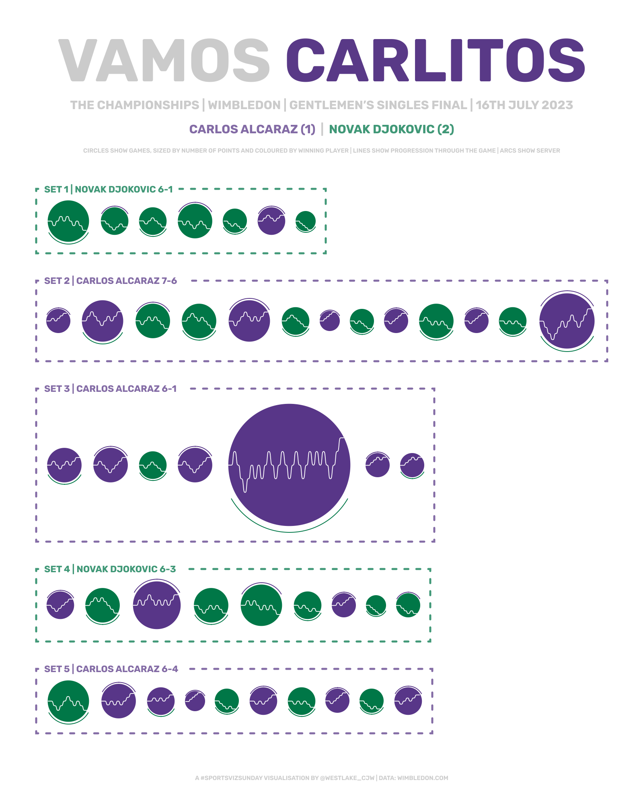
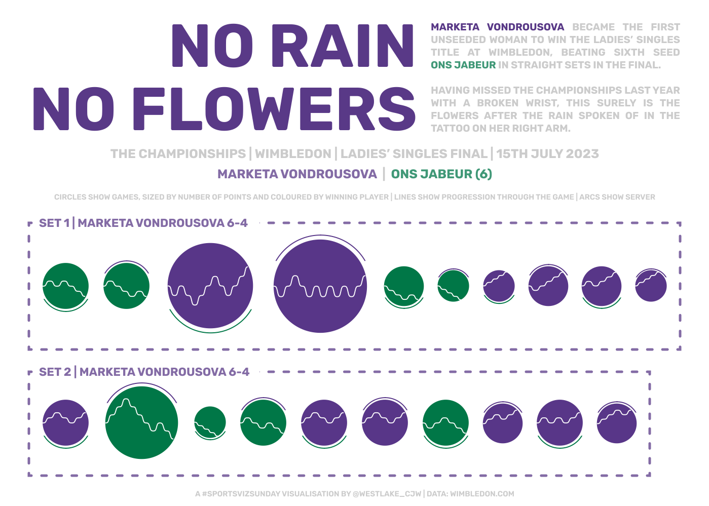
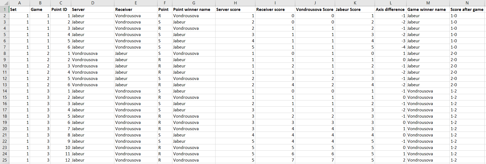
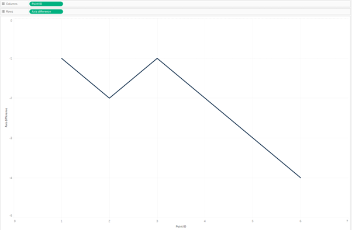
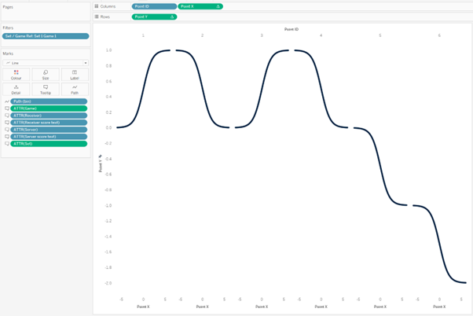
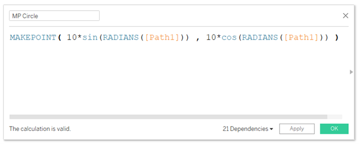
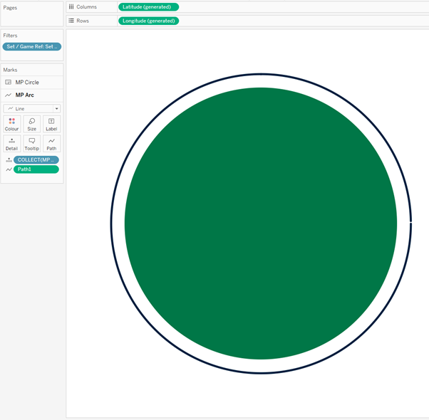
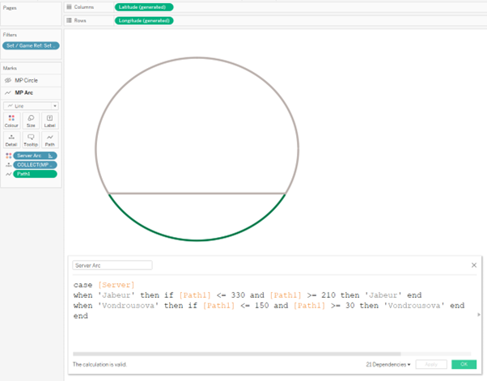
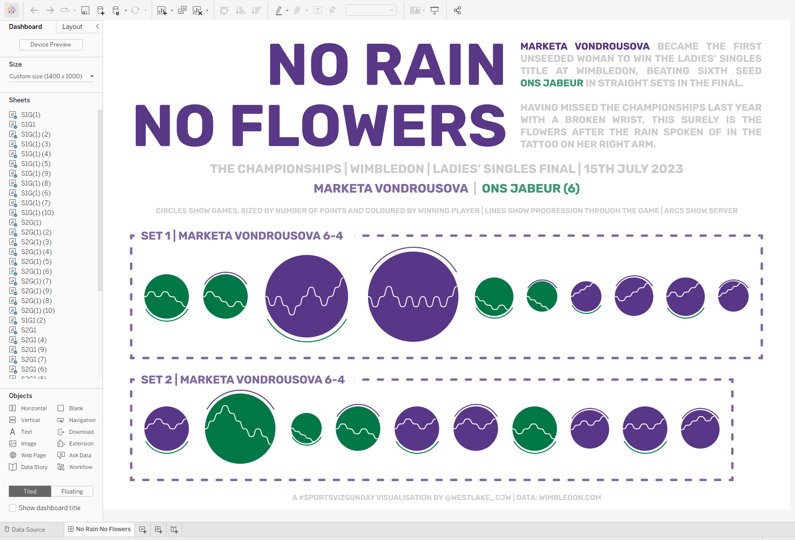

Last week, my wife and I bought our first home and, while the weather could have been better, it sure is nice to head into summer with a garden! It's a good job that Wimbledon isn't played in Scotland because it certainly would have been rained off for most of this week. Thankfully that wasn't such a concern and I think it's time to dust off one of my favourite visualisations that I created last year.
Following the 2023 Gentlemen’s and Ladies’ Singles Finals, I visualised tennis data for the first time. The Women’s version of this chart was selected as a Viz of the Day by Tableau in the following week. I want to break down for you my process with regards to these dashboards, focusing on the “No Rain, No Flowers” edition.


This process proved to be a lot harder than I expected. There are a lot of calculations involved in pulling these charts together, and the dashboard is far from elegant behind the scenes. It’s been a very humbling experience to me, and hopefully a lesson in the importance of commenting calculations and ensuring everything is neat and tidy!
The Data
Obtaining the data for a “passion project” is often the hardest part. Rarely does the right data come in the right format for you to just open Tableau and start vizzing. The data for this project was reasonably easy to come by, but still a laborious process. The Wimbledon website shows results for each match at a point by point level, but it’s not the easiest to extract. I put on a podcast, opened Excel, and started typing out the data. With an idea in mind that I was excited about, the time flew by and my data was ready in no time.
Below is a sample of the data I ended up with. Each Point within a Game and Set has its own row and identifier. The next few columns show who was serving, and who won the point. The scoring will make any tennis fan groan, I’m sure. The idea here was to make plotting the points in Tableau easier. We add in the proper scoring later (but who came up with the idea of 15, 30, 40 anyway?!). Once the scores were mapped in, I added a field that would plot the point on the Y axis in Tableau. Axis difference goes down 1 if the Receiver won a point, and up one if the Server wins the point. This continues until someone wins the point. The Game Winner and Score After Game fields could have been handled in Tableau with a level of detail calculation, but I put them in here to make things a little easier later on.

Moving into Tableau, I pulled this Excel sheet in and joined a densification sheet to it. We need to add dummy data between our actual data for the lines to be curved in the charts. This densification sheet enables this, and is simply one field (Path, in this case) containing numbers from 1 to 360. We join it to our main data by adding a join calculation of ‘1’ to each table.
We are now ready to build!
The Charts
There are two chart types in play in this visualisation. We’ll look at them both in turn, starting with the curved lines that tell the story of each game.
For these lines, we need to take a combination of the point identifier and the axis difference to plot the score at each stage of the match. Putting these fields on columns and rows gives us something similar to what we are after, but it needs some work for the desired effect to set in.

I decided to split this up to handle one point at a time. The curve needed to go from the score at the start of the point to the score at the end of the point. Our X co-ordinate needed to allow this to happen and was simply an Index calculation manipulated slightly to give the desired result using the Path field from our densification. The more complicated part was in handling the Y co-ordinate as this is where the curvature becomes very important. For the Y co-ordinate we need to know the value at the start of the point, which we do by doing a running sum of the axis difference changes as the game progresses. This value is added to a sigmoid function, scaled by the value that we want to end up at. The sigmoid function uses an exponential of the X value to give us a smooth curve along the line.
Adding the Point X and Point Y fields to the view, calculating both along the Path field which is added to the Path section of our marks card, we see the lines begin to take shape. All that is left to do here is some formatting, changing the axis ranges to line everything up as we want it, and adding the values to the tooltip.

The second chart that we have are the circles that go behind these curved lines, giving the illusion of a tennis ball. I used map layers for this, but looking back could possibly have used a dual axis instead since we only have 2 layers. The first layer is a polygon that gives us the circle background. The “makepoint” function remains my favourite function in Tableau. It allows you to create a point out of X and Y coordinates, effectively turning Tableau into a canvas. Some trigonometry gives us the coordinates for each point. For the X coordinate we need to multiply the desired radius (in this case I used 10) by the sine of the angle (our Path field from earlier). The Y coordinate is identical, except we need the cosine of the angle instead of the sine. Adding this to the view we get longitude and latitude points all around the circle which we can use to form our polygon, colouring it by the game winner.

The other layer in this view is the line indicating which player was serving. This is done through another “makepoint” calculation identical to before, but this time using a radius of 11 and making the mark a line instead of a polygon. You can see in the image below that this gives us a full circle, not just the arc that we are after. There is another calculation that we need which will split this circle into the sections that we need.

The Server Arc calculation separates the points depending on who is serving. If the server was Jabeur, we want to keep the points between 210 and 330. If the server was Vondrousova, we want to keep the points between 30 and 150. Any other points get mapped to a null value which in the final view we colour the same as the background so that they disappear from view. The result of adding this field to Colour is shown below, with those null values colours grey so that you can see the effect more clearly.

The Dashboard
Now that we have our two main views built, we can start assembling the dashboard. My intention for these dashboards was to create a poster style visualisation that would look great hanging on a wall, not necessarily viewed on a screen. All of the text that you see is embedded in a background image, which regrettably creates issues regarding accessibility.
The title sets the scene for the visualisation, and tells a little of Marketa Vondrousova’s story leading up to this match. A tattoo on her arm reads “no rain, no flowers” which proves the perfect analogy to her winning a tournament that she was forced to miss the previous year through injury. To add to the flowers, she made history by becoming the first unseeded woman to win the title at Wimbledon. The rest of the text sets the scene for the visualisation, providing background details of the match and the final score. Each set is grouped together by a dashed banding in the colour of the set winner. I brought in the circles first, and then floated the lined over the top to create the tennis ball like shapes that make up the view.

The colours used are recognisable as the Wimbledon purple and green, using an association that many people already have. By using just two colours which contrast nicely, the aesthetic of the visualisation is kept clean and simple.
The storytelling in both of these visualisations work nicely, I think. It’s clear to see how even the match was at the start of the first set of the Women’s Final. Vondrousova was forced to work harder for games she won at the start, shown by the larger circles of games 3 and 4. After that, she found herself 4-2 behind but pulled off an impressive turnaround to win the next 4 games without reply. She then had to come from behind again in the second set, winning 3 games in a row to take the title.
The men’s game also shows some interesting stories. Djokovic won the first set in a straightforward manner before Alcaraz took the second after a tiebreaker. The third set gave rise to one of the longest games in Wimbledon history with an incredible 32 points. Djokovic took the fourth set to force the match into a decider. Eventually, after a gruelling 4 hours and 42 minutes, Carlos Alcaraz was crowned as the 2024 Men’s Wimbledon champion.
//
It's been great fun to look back at this visualisation a year later and try to fathom what I did to make it all come together. As I often find, there is a lot that I would do differently. The use of a background image laden with text is regrettable, and something I have tried hard since to veer away from.
The major thing I would change is the set up of the charts themselves. Each game required two additional sheets that needed to be floated onto the dashboard in precisely the right position. In total that meant 40 sheets for the women’s edition, and a slightly ridiculous 92 sheets for the men’s. You can see how crazy this looks in the image of the dashboard screen above. I think this part took longer than building the rest of the process combined, including the data collection! There must be a way to build thin in fewer sheets, maybe even condensing it all into one. If you have any ideas, I’d love to hear them!
I hope you have found this behind the scenes exploration of this dashboard as interesting as I have found it humbling. It’s never easy reopening a workbook you built a long time ago, and much less sharing that publicly! Hope you are all able to sit back and enjoy the business end of Britain’s finest sporting event of the year!
Take care // Chris